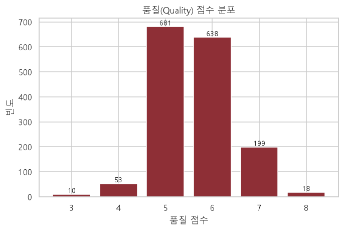
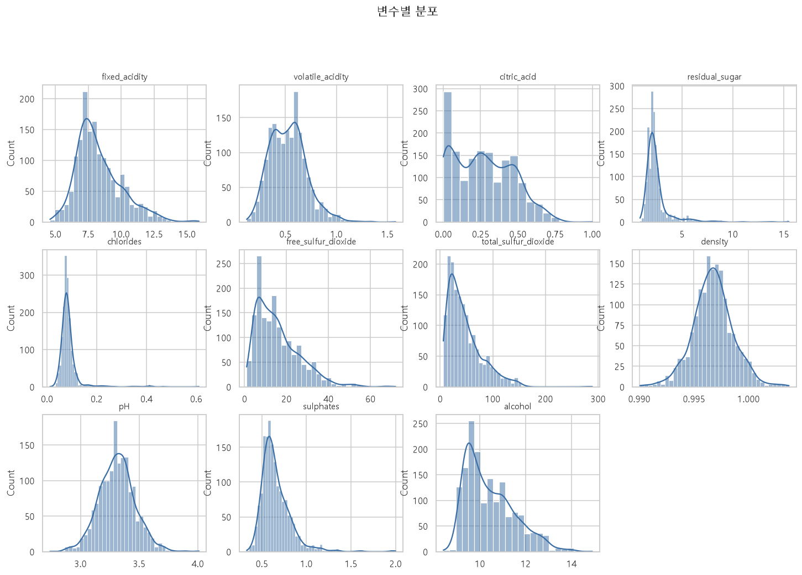
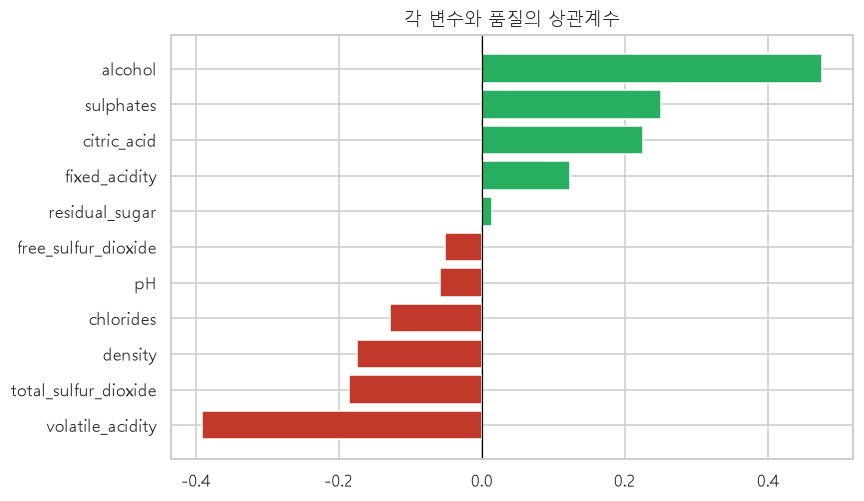
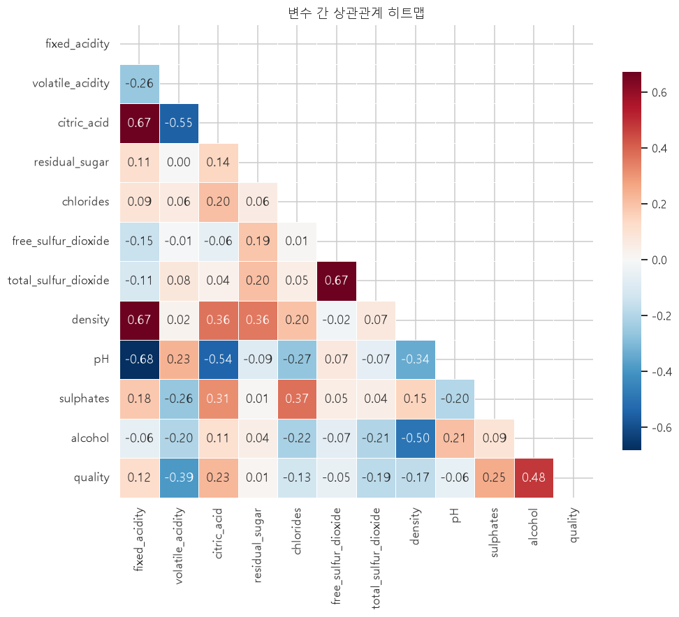
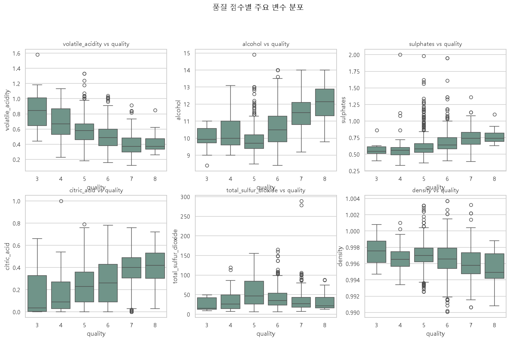
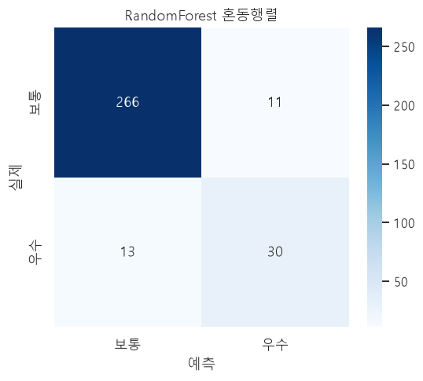
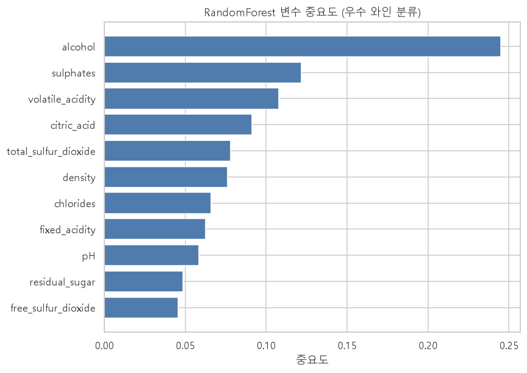

Data Analysis Presentation
물리·화학적 측정값으로 품질을 설명하고, 우수 와인을 예측하다
UCI Wine Quality Data Set · Cortez et al. (2009) · n = 1,599
출처·변수 구성·규모
결측·중복·품질 분포
상관관계·분포·이상치
분류 모델·성능·중요 변수
05 결론 및 시사점 · 06 한계와 향후 과제
uciml/red-wine-quality-cortez-et-al-2009fixed acidityvolatile acidity citric acidresidual sugar chloridesfree SO₂ total SO₂density pHsulphates alcohol
| 품질 | 3 | 4 | 5 | 6 | 7 | 8 |
|---|---|---|---|---|---|---|
| 빈도 | 10 | 53 | 681 | 638 | 199 | 18 |
5·6점에 약 82% 집중 → 클래스 불균형

→ 정확도만으로 평가하면 소수 클래스를 놓치므로 F1 / ROC-AUC 중심 평가가 적절

잔당·염화물·황산염은 오른쪽으로 긴 꼬리(양의 왜도) → 이상치 가능성
| 변수 | 상관계수 |
|---|---|
| 알코올 (alcohol) | +0.476 |
| 황산염 (sulphates) | +0.251 |
| 구연산 (citric acid) | +0.226 |
| 총 이산화황 | −0.185 |
| 밀도 (density) | −0.175 |
| 휘발성 산도 | −0.391 |


다중공선성은 선형 모델 해석에 주의, 트리 모델에는 영향 작음

알코올·황산염·구연산 증가 / 휘발성 산도·밀도 감소
class_weight="balanced"실무적으로 "우수 와인 후보 선별"에 부합하는 정의
| 모델 | Accuracy | F1 | ROC-AUC |
|---|---|---|---|
| LogisticRegression | 0.8125 | 0.5312 | 0.8824 |
| RandomForest | 0.9250 | 0.7143 | 0.9429 |
RandomForest가 우수 클래스(F1 0.71)를 로지스틱 회귀(0.53)보다 훨씬 잘 탐지

| 클래스 | Precision | Recall | F1 |
|---|---|---|---|
| 보통 | 0.953 | 0.960 | 0.957 |
| 우수 | 0.732 | 0.698 | 0.714 |
보통 266/277 · 우수 30/43 정확 분류. 오탐(11)이 적어 정밀도 중심 활용에 적합

| 순위 | 변수 | 중요도 |
|---|---|---|
| 1 | alcohol | 0.245 |
| 2 | sulphates | 0.122 |
| 3 | volatile acidity | 0.108 |
| 4 | citric acid | 0.091 |
| 5 | total SO₂ | 0.078 |
상관분석과 일치 — 알코올이 압도적
알코올↑ 품질↑, 휘발성 산도(식초 맛)↑ 품질↓
정확도보다 F1·ROC-AUC 중심 평가가 적절
RandomForest로 우수 와인 선별 자동화 가능
요약: 화학적 지표만으로도 우수 와인(≥7)을 정확도 0.925 · ROC-AUC 0.943으로 예측 가능하며, 품질 등급 사전 예측·품질 관리 자동화에 활용할 수 있다.
레드와인 품질 데이터 분석
데이터 출처: UCI ML Repository / Kaggle — Wine Quality (Cortez et al., 2009)
분석: Python · pandas · scikit-learn · matplotlib · seaborn